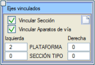
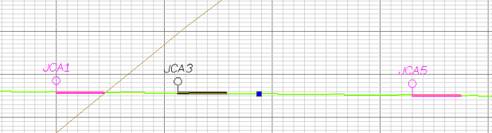

| |
|
İLİŞKİLİ EKSENLER
|
Bu işlevsellik, eksenler arasında belirli bir bağımlılığın olduğu projelerde güzergah alternatiflerini anında değerlendirmeyi sağlar, çünkü bir eksenin sol ve sağ kısmını başka bir eksenin tamamıyla değiştirmeye olanak tanır. Bu fonksiyon, çeşitli alternatiflerin konumunun hesaplandığı ve görselleştirildiği bir tünel gibi, elemanlar arasındaki göreceli konumu değerlendirmenin gerekli olduğu projelerde veya platformların bağımsız olduğu ya da bir tür düzeltici eylemin uygulanacağı karayolu güzergahlarında çok kullanışlıdır. Bu seçenek, eklenen eksenlerde mevcut olan her türlü sembolü de (raylar ve traversler dahil) ekler. Eğer bir eksenin diğer eksenlerden ilişkilendirilmiş platformları varsa, boykesit çiziminde makas donanımları çizilirse, ilişkili eksenler üzerindeki makas donanımları da görülecektir. Eğer makas donanımlarının gösterimi etkinse, sapan eksenin kırmızı kotu üzerinde onu diğer eksenlere bağlayan makas donanımları da görülecektir. Boykesit çiziminde, makas donanımları sapan eksende de gösterilir. (Planda, eksenin başlangıcını JCA'da (kontray birleşim derzi) ve sapan ekseni bir yay aracılığıyla makas donanımıyla oluşturma seçeneği ile işaretlemek tavsiye edilir). Eğer bir eksenin diğer eksenlerden ilişkilendirilmiş platformları varsa, eksenin kırmızı kotu üzerinde ilişkili eksenler üzerindeki makas donanımları görülecektir. Enkesiti İlişkilendir ve Makas Donanımlarını İlişkilendir kutucukları etkinleştirilerek veya devre dışı bırakılarak, Makas Donanımları ve/veya Enkesitler (Platform + Tip Kesit) bağımsız olarak ilişkilendirilebilir. 
|